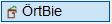
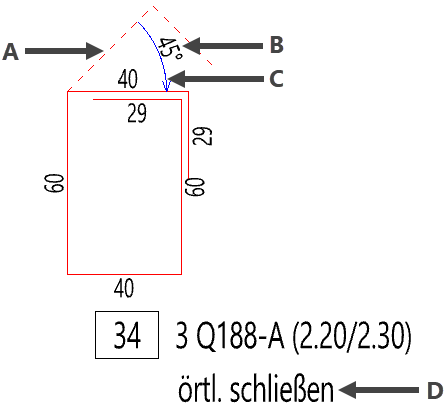
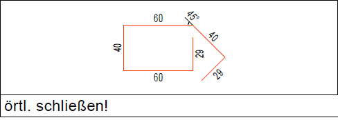
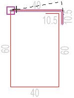
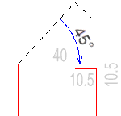
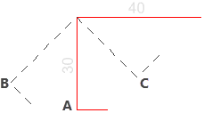

")

Mit dieser Funktion stellen Sie örtlich zu biegende Bewehrungsstäbe als zusätzliche Teillängen an der Biegeform dar.
Für den Einbau müssen manche Biegeformen auf der Baustelle nachgebogen werden, weil sie sonst nicht eingebaut werden können. In der Zeichnung werden diese Biegeformen in der endgültigen Darstellung angezeigt. Sie werden zusätzlich mit einem Hinweis (Biegelistentext) für die Ausführenden versehen, z. B.: "vor Ort schließen". In der Biegeliste wird der Zustand der Biegeform vor dem Einbau dargestellt.
Darstellung in der Zeichnung |
Darstellung in der Biegeliste |
|---|---|
 |
 |
A: Aufbiegung; B: Aufbiegewinkel; C: Biegerichtung; |
In der Biegeliste wird die Biegeform in aufgebogener Form dargestellt. |
·In der Biegeliste wird die Biegeform mit Biegung, Biegelistentext und Bemaßung angegeben.
·Bei der Ausgabe im BVBS-Format wird die Biegeform mit den Daten der aufgebogenen Form herausgeschrieben.
·Die Biegung in der Zeichnung wird im Druck ausgegeben und in andere Dateiformate exportiert.
·Die Biegung ist nur visuell und kann nicht als Referenzelement angeklickt werden.
·Bei Zusatzauszügen (gestrichelte Form) wird die Biegung nicht dargestellt.
·Bei der Bearbeitung der Biegeform-Teillängen oder der verlegten Bewehrung wird auch die Biegung angepasst.
Nach diesen Editieroperationen erfolgt eine Anpassung: [ändTlg]; [DehFor]; [DehBew].
·Die Biegung wird nach dem Hinzufügen einer Teillänge mit der Funktion [addTlg] entfernt. Ebenso nach dem Entfernen einer Teillänge mit [ändTlg]. Sie erhalten eine entsprechende Meldung.
Biegung hinzufügen
§Bewegen Sie den Cursor in die Nähe des Punktes, an den Sie die Biegestelle setzen möchten. [Biegestelle auswählen].
Achten Sie darauf, dass die richtige Teillänge und der gewünschte Anfangspunkt der Biegung markiert wird. Als Hilfestellung wird Ihnen eine Vorschau der Biegung angezeigt.
 |
§Zum Bestätigen, klicken Sie die Teillänge in der Nähe des Anfangspunktes an.
Die endgültige Lage kann im nächsten Schritt angepasst werden.
§Führen Sie einen der folgenden Schritte aus. [Aufbiegewinkel (positiv -> aufbiegen)].
-Die exakte Lage des Pfeils zur Angabe der Biegerichtung oder dessen Darstellung an der Aufbiegung können Sie im nächsten Schritt angeben. [Lage Pfeil (Enter=kein Pfeil)].
Bestätigen Sie dazu die Winkeleingabe mit Rechtsklick oder der Eingabetaste. Mit einem Linksklick werden die Aufbiegung und der Pfeil sofort gezeichnet.
 |
-Aufbiegewinkel < 90° sind nicht zugelassen.
a)Aufbiegewinkel eingeben: In dieser Abfrage geben Sie einen Differenzwinkel zwischen dem geöffneten und geschlossenen Zustand der Teillänge(n) in Bezug auf die vorhergehende Teillänge an.
Geben Sie einen positiven Wert ein, um die Biegeform durch die Biegung zu öffnen. Mit einem negativen Wert wird die Biegeform geschlossen. Bestätigen Sie mit der Eingabetaste.
Bei runden Teillängen und Teillängen, die tangential an einem Bogen ansetzen, sind nur Aufbiegungen möglich. Daher können nur positive Winkel eingegeben werden.
 |
A. Zu biegende Teillänge; B. Die Form wird geöffnet bzw. aufgebogen (Winkeleingabe = 45); C. Die Form wird geschlossen (Winkeleingabe = -45). |
b)Winkelraster: Bei aktivem Winkelraster lassen sich nur noch Mausbewegungen im eingestellten Winkel ausführen.
·Winkel einstellen: In der oberen rechten Ecke der Programmoberfläche ist die Schaltfläche platziert. Klicken Sie diese an, um einen anderen Winkel auszuwählen. Bestätigen Sie mit OK. ·Winkelraster aktivieren: Aktivieren Sie das Winkelraster mit gedrückter Umschalttaste und bewegen Sie den Cursor in die gewünschte Richtung. Unter der Abfrage wird der aktuelle Drehwinkel angezeigt. |
Bestätigen Sie mit Rechtsklick.
c)Frei absetzen: Bewegen Sie den Cursor, um die Drehung anzupassen. Mit einem Rechtsklick können Sie anschließend die Lage des Pfeils bestimmen.
d)Winkel übernehmen: Übernehmen Sie den Winkel aus der letzten Eingabe mit einem Rechtsklick.
§Bestimmen Sie die Lage des Pfeils zur Angabe der Biegerichtung, indem Sie den Cursor bewegen, und bestätigen Sie abschließend mit einem Linksklick. [Lage Pfeil (Enter=kein Pfeil)].
-Bei Bestätigung mit Rechtsklick oder der Eingabetaste wird kein Pfeil gezeichnet.
-Der Pfeil wird immer mit Stiftummer 1 gezeichnet.
§Setzen Sie den Biegelistentext an einer beliebigen Stelle ab. [Lage Text].
-Sie können sofort eine weitere Biegung erstellen.
-An einer Biegeform können mehrere Biegestellen definiert werden. Mit der hier beschriebenen Funktion kann je Biegeform nur ein Biegelistentext gesetzt werden. Um weitere Biegelistentexte hinzuzufügen, nutzen Sie die Funktion [Formma | BiForm | BiLiTx].
Biegung ändern
§Klicken Sie die Teillänge in der Nähe der Biegestelle an.
§Drehen Sie die Biegung, indem Sie einen Winkel angeben.
Die Biegung wird angepasst. Der vorhandene Biegelistentext bleibt erhalten.
Zugehörige Aufgaben:
·Örtlich zu biegende Bewehrung entfernen
·Biegelistentext und Darstellung der Biegung ändern (Systemdaten)
Siehe auch: